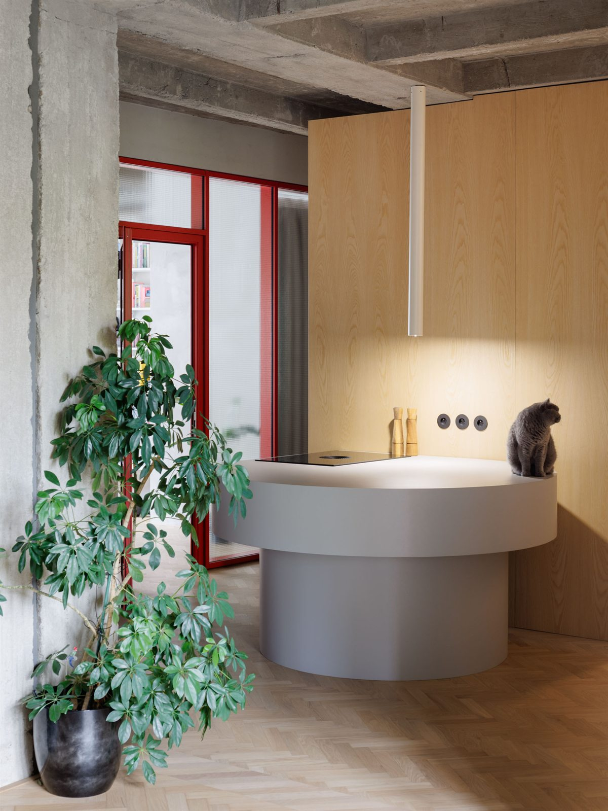
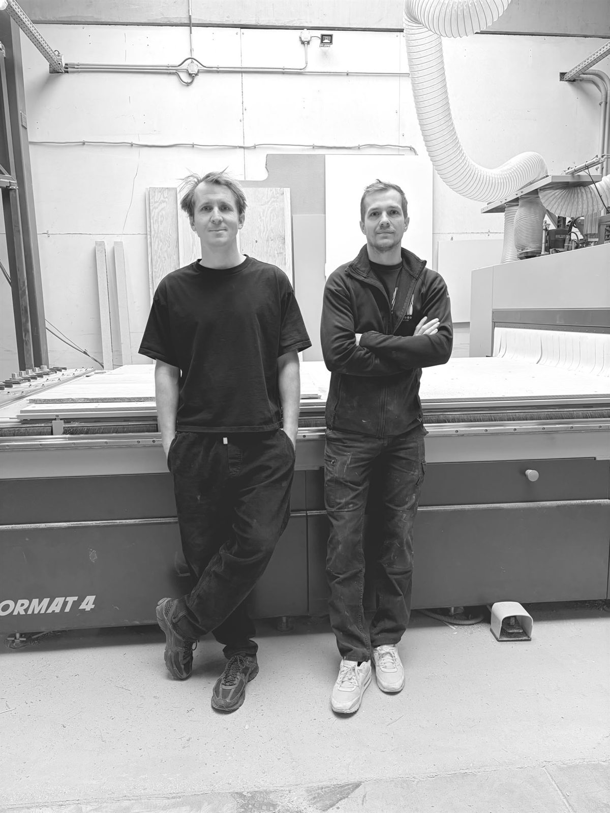
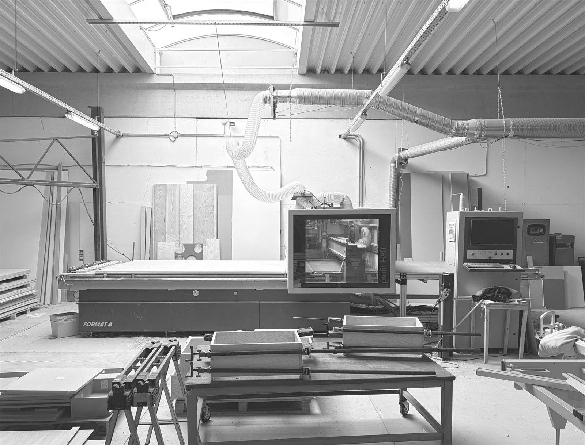
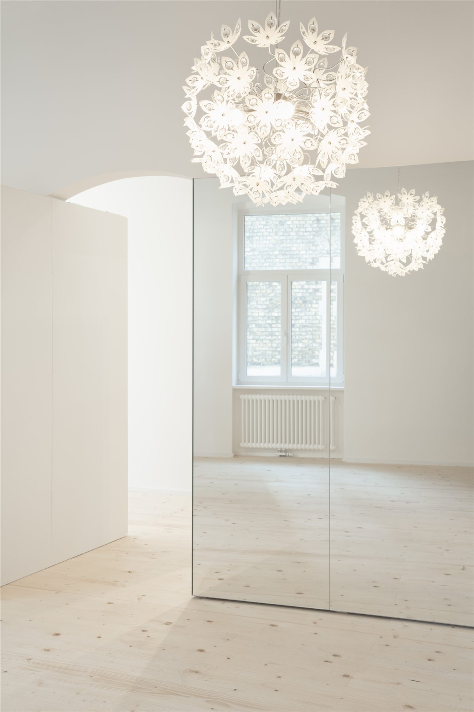

Kúpili sme starší byt a ide sa rekonštruovať.
Pri rekonštrukcii sa zapojíme už v štádiu projektu. Spolu so stavbou zosúladíme rozvody, rozmery aj detaily, aby na konci všetko do seba presne zapadlo.
Hantverk je stolárstvo z Bratislavy, ktoré vyrába nábytok na mieru pre byty, domy a komerčné priestory. Veríme, že dobrý nábytok vzniká z porozumenia priestoru, poctivého remesla a kvalitných materiálov. Navrhujeme ho s citom pre detail a vyrábame s dôrazom na presnosť.


Marek je absolvent Stavebnej fakulty Slovenskej technickej univerzity a kombinuje prax v architektonickom ateliéri s projektovým manažmentom na developerských projektoch. Vo firme má na starosti komunikáciu s klientmi, vypracovanie návrhov, projektovú dokumentáciu a koordináciu s architektmi a stavbou.
Tomáš zdedil remeslo po otcovi. V stolárskej dielni sa pohybuje už viac ako 15 rokov a špecializuje sa na riadenie výroby a montáže.
Návrh, výkresy aj výrobu máme pod jednou strechou. Návrh a projekciu robíme v pokročilých 2D a 3D softvéroch, takže riešenie uvidíte skôr, než sa začne rezať. V tíme máme štyroch vlastných remeselníkov, každého s viac ako desaťročnou praxou. Vyrábame vo výrobnej hale s rozlohou 500 m² na poslednej generácii CNC a obrábacích strojov.

Kúpili sme starší byt a ide sa rekonštruovať.
Pri rekonštrukcii sa zapojíme už v štádiu projektu. Spolu so stavbou zosúladíme rozvody, rozmery aj detaily, aby na konci všetko do seba presne zapadlo.
Malý byt, potrebujeme každý centimeter.
V malom priestore rozhoduje každý detail. Navrhneme nábytok, ktorý využije aj ťažko dostupné miesta a pritom nechá byt vzdušný a príjemný na bývanie.
Architekt navrhol interiér, kto ho vyrobí?
Návrh architekta prevedieme do výroby so všetkými detailmi. Pred výrobou pripravíme dielenské výkresy, ktoré spolu skontrolujeme a schválime.
Drevo so sklom, oceľou alebo kameňom.
Nemusíte koordinovať viacerých remeselníkov. Výrobu aj spojenie rôznych materiálov máme na starosti my, od návrhu až po finálnu montáž.
Ak ste architekt alebo máte podklady od Vášho architekta, pošlite nám ich a my sa postaráme o ich presnú realizáciu. Ak začínate od nuly, vypracujeme Vám návrh, ktorý naplní všetky Vaše očakávania.

Cez formulár, e-mailom alebo nám zavolajte.
Do 1 týždňa Vám vypracujeme návrh a cenovú ponuku.
Výroba a montáž trvá zvyčajne do 8 týždňov od odsúhlasenia výkresovej dokumentácie.
Po odovzdaní Vám ponúkame bezplatný záručný servis 5 rokov.
„Celý proces prípravy a komunikácie prebiehal veľmi hladko a výsledok je fakt super. Môžem iba odporúčať, ak hľadáte stolárov s citom pre detail a kvalitnú prácu. :)“
„Hantverk môžem odporučiť, boli sme spokojní s realizáciou nábytku do celého bytu, od kuchynskej linky až po jednotlivé izby. S komunikáciou nebol problém, v prípade dodatočných požiadavok boli stolári ochotní prísť a upraviť nábytok na mieru.“
„S touto firmou máme výbornú skúsenosť. Od prvého kontaktu až po finálnu realizáciu prebehlo všetko hladko a na vysokej úrovni. Veľmi oceňujeme príjemnú komunikáciu, spoľahlivosť, precízne spracovanie a cit pre detail.“
„Pokiaľ hľadáte spoľahlivého stolára na nábytok na mieru, tak môžem odporúčiť. Profesionálny prístup, dôraz na detaily, výborná komunikácia a dodržiavanie dohodnutých termínov.“
„Veľmi spokojný s robotou! Rýchlo a profesionálne môžem len odporučiť.“